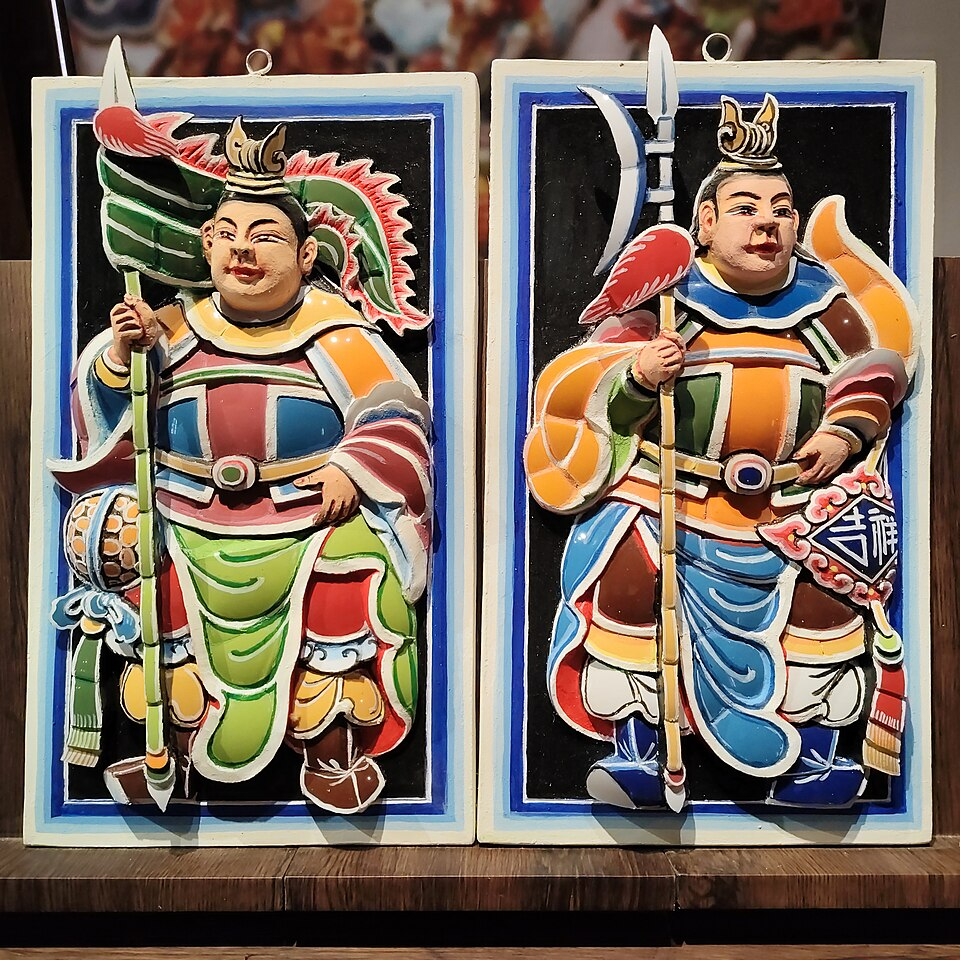
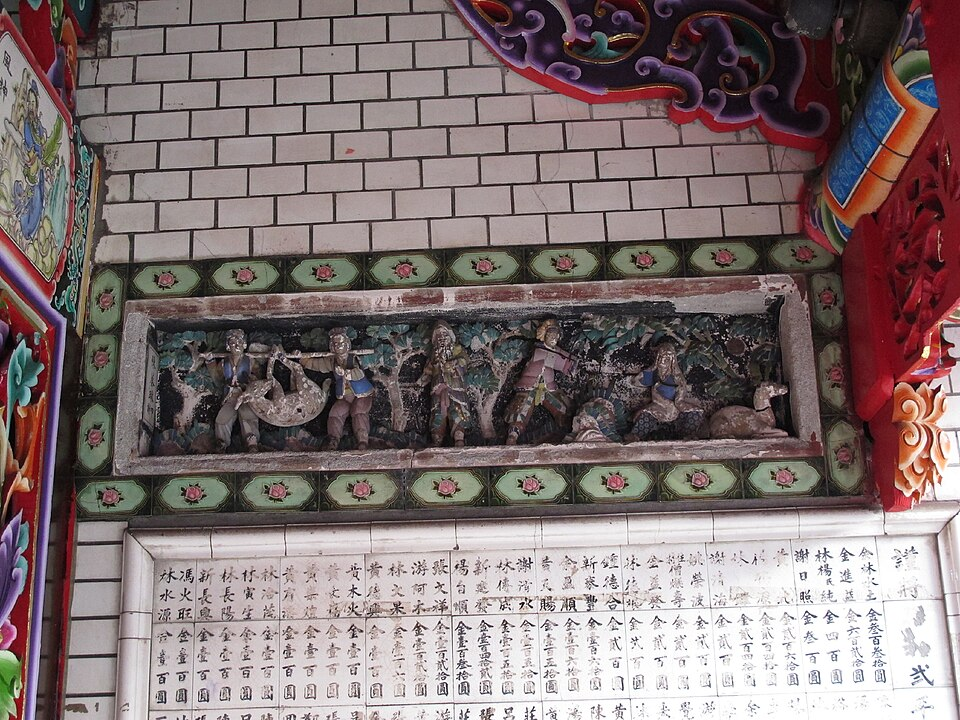
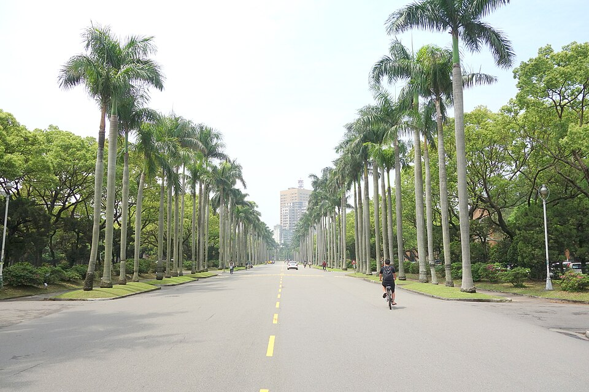
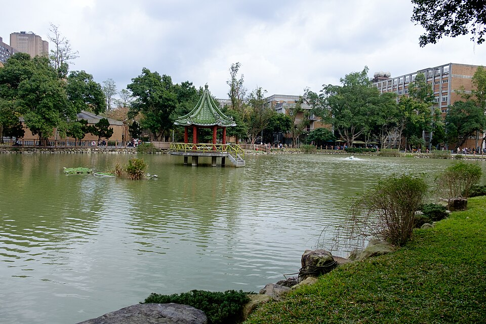
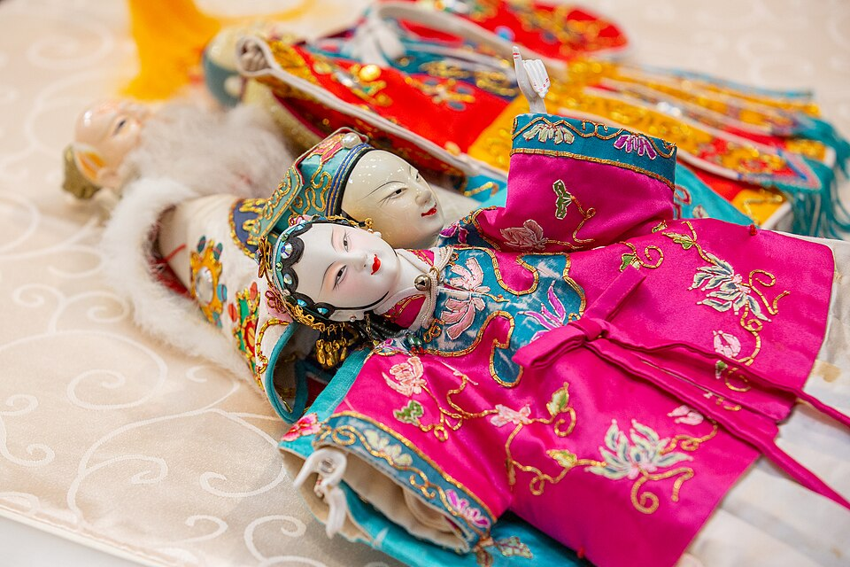

01
剪黏像素SHARD PIXELS
剪黏是台灣廟宇屋脊上的工藝：師傅把彩色瓷碗剪成碎片，一片片黏成神明和戲曲人物。它本來就是用碎片拼出影像，跟像素的邏輯相同。這個方向讓同一座歌仔戲戲台從照片、變成手剪的瓷片、再變成方正的像素。衝突是手工的不規則碎片對上機器的整齊方格，和諧是兩者都在用碎片重組畫面。
照片 → 手剪瓷片 → 方格像素
百戲
主標填入剪黏瓷片

剪黏門神真的剪黏，右半轉成像素

宜蘭城隍廟牆堵 八家將面譜，也可以當底圖
八家將面譜，也可以當底圖配色
瓷白 #F4EFE6
碗公藍 #1F4E9C
釉綠 #2E9E6A
朱紅 #D33A2C
顏色全部取自釉瓷。像素那一側也只用這四色，數位與手工共用同一套色票。
字體與圖案
- 主標字用瓷片填滿或拼成
- 圖案：從不規則碎片漸變到方格的網格，可當轉場帶
- 廟宇屋脊上的剪黏本來就常做戲齣人物，題材直接接得上
延伸應用
- 磁磚杯墊：真的瓷，也是真的像素
- 貼紙：瓷片形狀模切
- 外套：刺繡從碎片漸變成方格
- 形象照框：人像邊緣碎成瓷片
02
城南蜃樓MIRAGE
直接接藝術季主題。瑠公圳是清代開鑿、灌溉臺北盆地的水圳，有一段流經臺大，沿小椰林道流進醉月湖。這個方向用這條水當媒介：椰林大道和早年校園倒映在水面上，被水波扭曲成蜃樓；歌仔戲（台灣本地發展出來的戲曲）的水袖化成水流與煙霧。手法是液化與疊影，畫面夢幻，帶一點詭異。

城南蜃樓
Noto Serif TC Black ＋ 煙霧濾鏡

醉月湖，瑠公圳在校園裡的終點 早年校園舊照
早年校園舊照 歌仔戲，加上水波
歌仔戲，加上水波水圳倒影
配色
深夜藍 #141B2B
舊照棕 #E7C9A0
圳水綠 #4F8F86
朱 #C8402F
舊照棕和深夜藍是過去，圳水綠是水面；朱紅只留給戲服。
字體與圖案
- 主標做成煙霧或水流狀的字
- 圖案：水圳波紋、椰子樹剪影，當底紋與分隔線
- 水平線是所有版面的軸線：上面是現實，下面是蜃樓
延伸應用
- 展場導覽線沿著校園裡的瑠公圳路線走
- 扇子：扇面是蜃樓畫面
- 舊照需向臺大校史館或圖書館特藏申請授權
03
金光外台GOLDEN LIGHT STAGE
1950 年代起，中南部廟埕的金光布袋戲就用彩色布景、絢爛燈光和特殊音效吸引觀眾，後來霹靂把聲光帶上電視。台灣戲曲跟聲光科技混在一起已經七十年，LED 只是接著這條路走。這個方向把戲曲放回廟口：野台戲、八家將、電子花車，再用 LED 點陣、跑馬燈、霓虹燈管字干擾畫面。
照片轉成 LED 點陣，掃描線滑過
百戲開台
NTU ART SEASON · 100 WORKS
 廟前野台
廟前野台百戲開台 ✦ 金光強強滾 ✦ 臺大藝術季 ✦ 一百齣好戲 ✦ 科技 × 人文 ✦

布袋戲偶配色
廟紅 #C4161C
金 #FFD23F
花車粉 #FF3D7F
LED綠 #38FF8C
紅金是廟宇本色，粉綠是 LED 與霓虹。四色都飽和，需要黑底撐住。
字體與圖案
- 主標做霓虹燈管字，副標用點陣字
- 文案用台語語感，例如「強強滾」
- 彩樓的對稱外框當所有版面的固定框
延伸應用
- 平安符、打火機：題材直接對得上
- truss 架：掛真的 LED 跑馬燈
- 關東旗、橫幅：沿用廟會旗幟版型
參考：金光布袋戲的興起、洋蔥設計「金光舞台車閃閃嘉年華」、沈昭良攝影集《STAGE》
三個方向對照
| 方向 | 底圖 | 科技手法 | 調性 | 需要的素材 |
|---|---|---|---|---|
| 01 剪黏像素 | 八家將、布袋戲偶 | 剪黏碎片過渡到方格像素 | 和諧中帶衝突 | 剪黏照片、戲曲人物照 |
| 02 城南蜃樓 | 椰林大道、瑠公圳、歌仔戲 | 液化、水波、疊影 | 夢幻、微詭異 | 臺大舊照授權 |
| 03 金光外台 | 野台戲、八家將、布袋戲 | LED 點陣、跑馬燈、霓虹 | 熱鬧、台味 | 廟會照片、燈管字 |
方向可以混用。例如 01 的碎瓷片可以當 02 水面倒影的質感，03 的 LED 點陣也能取代 01 的方格像素。